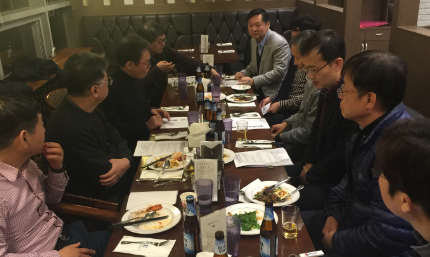
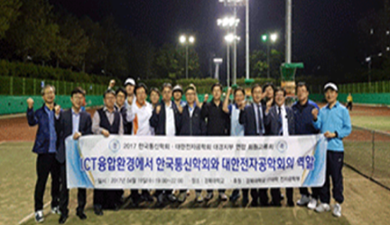
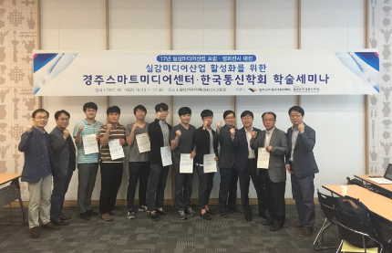
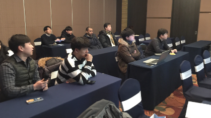

정기 이사회
매년 상반기, 하반기 각 1회씩 정기이사회를 개최하여 주요임원 및 대경지부 회원들이 한자리에 모여 서로를 소개하고 당해 지부의 주요활동 방향을 토론하고 한해 행사에 대한 구체적인 계획을 세운다. 춘계 워크숍, 하계학술대회 지부특별세션, 추계 워크숍 개최 방안에 대해 구체적으로 논의한다.
- 2017년03월 정기이사회 및 회원 교류회
- 2017년12월 정기이사회 및 총회
- 2018년09월 정기이사회 및 워크숍 (예정)
주요활동 사진
2017년12월 정기이사회(총회)

회원 화합행사
매년 상반기 봄, 하반기 가을 년2회 대경지부 회원들이 한자리에 모여 회원교류회를 통해 지부 활성화를 도모한다. 지역 대학, 기업, 연구소 관련 분야 종사자들이 모여 통신학회 대경지부 발전을 위한 다양한 협력을 모색한다. 이를 통해 기존 지부 회원들을 통한 지부의 활동을 지속적으로 홍보하고 타 학회와의 공동 워크샵 개최를 논의한다.
- 2017년04월 회원교류회 (전자공학회 공동)
- 2018년10월 회원교류회 (예정)
주요활동 사진
2017년4월 대구경북지부 회원화합 행사

지부 워크숍
매년 1회씩 한국통신학회 대구경북지부 자체적으로 워크샵을 개최하여 지역 기관 ICT관련 기업, 연구소, 대학과의 학술 교류를 통해 지부 활성화를 도모한다. 지부 참여 회원의 학술논문 발표, 학위논문 발표, 주제발표, 초청 특강등으로 구성하여 지역 회원간의 연구 분야를 서로 이해하고 산학연 연계 연구활동을 시작할 수 있는 만남의 장이 되도록 한다. 워크숍에 발표한 학생 논문에 대해 우수 논문상을 수여하여 참여 학생회원의 연구활동을 장려하고 향후 지부활동의 활발한 참여를 유도한다.
- 2017년05월 춘계워크숍 (경주스마트미디어)
- 2018년09월 추계워크숍 (예정)
주요활동 사진
2017년5월 대구경북지부 춘계 워크숍

정기 학술대회 지부특별세션
한국통신학회의 정기학술대회인 하계학술대회, 추계학술대회, 동계학술대회에 지부특별세션을 구성하여 지부회원의 논문 발표를 통해 전국 지부 회원간의 만남의 시간을 가진다. 이를 통해 지부 발전을 위한 다양한 의견을 청취하고 지부 활성화를 위한 공동 활동방안 강구 및 계획을 수립한다. 지부특별세션에 발표한 논문을 우선적으로 한국통신학회 논문지에 특집호로 추천할 수 있도록 장려하여 지부 회원의 활동을 지원한다.
- 2017년06월 하계학술대회 지부특별세션
- 2018년01월 동계학술대회 지부특별세션
- 2018년06월 하계학술대회 지부특별세션
- 2018년11월 하계학술대회 지부특별세션
주요활동 사진
2018년01월 한국통신학회 동계학술대회 지부특별세션
